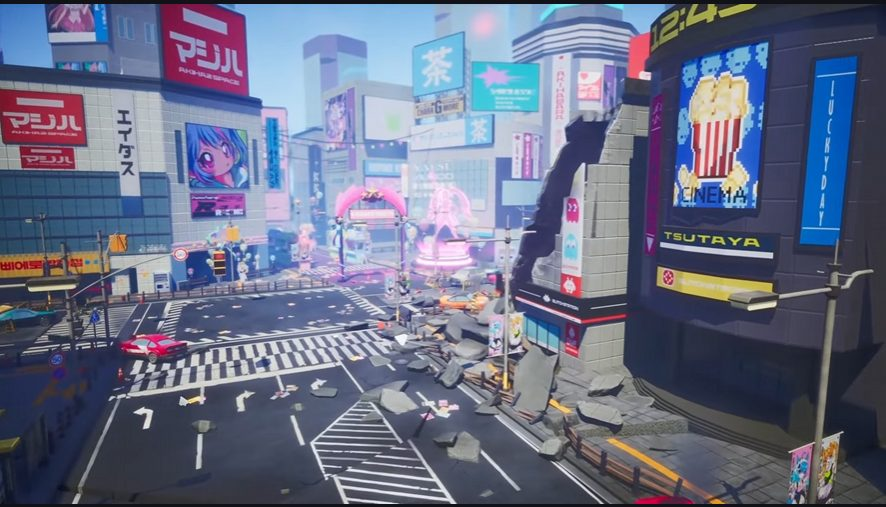

상황
PD의 업무 부담과 아트 리소스 제작 지연으로 튜토리얼 구현이 어려운 상황이었습니다.
01 / TEAM · 2024.08—12
미마미
16명이 만든 보스전 중심 액션 게임입니다.
프로그래머로 참여했고, 개발 후반에는 PD도 맡았습니다.

미마미 최종 시연 ↗01 / DECISION
PD의 업무 부담과 아트 리소스 제작 지연으로 튜토리얼 구현이 어려운 상황이었습니다.
AD·애니메이터와 협의해 잡몹을 1종으로 줄이고, 애니메이션 종류·개수와 제작 일정을 조정했습니다.
플레이 가능한 최소 버전을 먼저 만들고 부족한 부분을 보완했습니다. 튜토리얼을 완성해 최종 시연 빌드에 반영했습니다.
02 / TEAM OPERATION
팀원이 작성한 TODO를 매일 확인하고 개인별 진행 상황을 관리했습니다.
디스코드에서 주 2회 모여 진행 상황을 공유하고 작업을 나눴습니다.
빌드를 지속적으로 공유하고, 버그 수정 후 기획자와 테스트를 진행했습니다.
03 / PLAYABLE RESULT
튜토리얼을 포함한 최종 빌드를 완성했습니다. 종료 후에는 포스트모템으로 협업 과정을 돌아봤습니다.
 중간 시연 영상 ↗
중간 시연 영상 ↗중간 시연
최종 시연 · 튜토리얼 반영
04 / DEVELOPMENT
개발 10주차부터 실질적인 PD 업무를 수행했고, 13주차에 공식 인수했습니다. 팀 PM이 작성한 일정 양식을 바탕으로 개인별 TODO 확인, 회의 진행, 범위 조율과 개발을 맡았습니다.
기록은 개인 업무 일지·회의록·설문의 관련 항목을 요약했습니다. 제작 범위·회의 주기는 본인 회고를 반영했습니다.